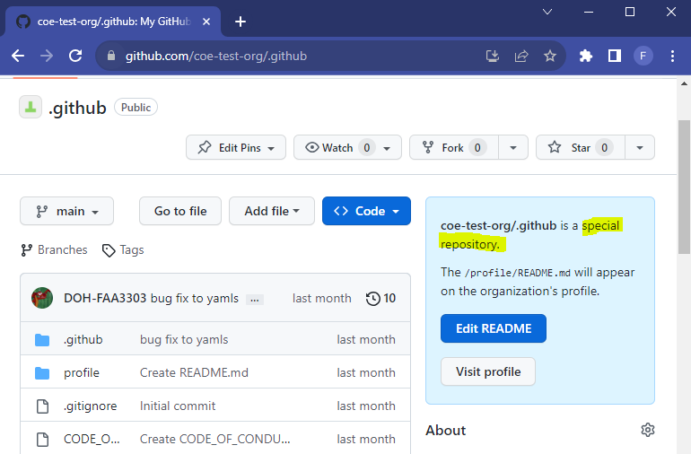
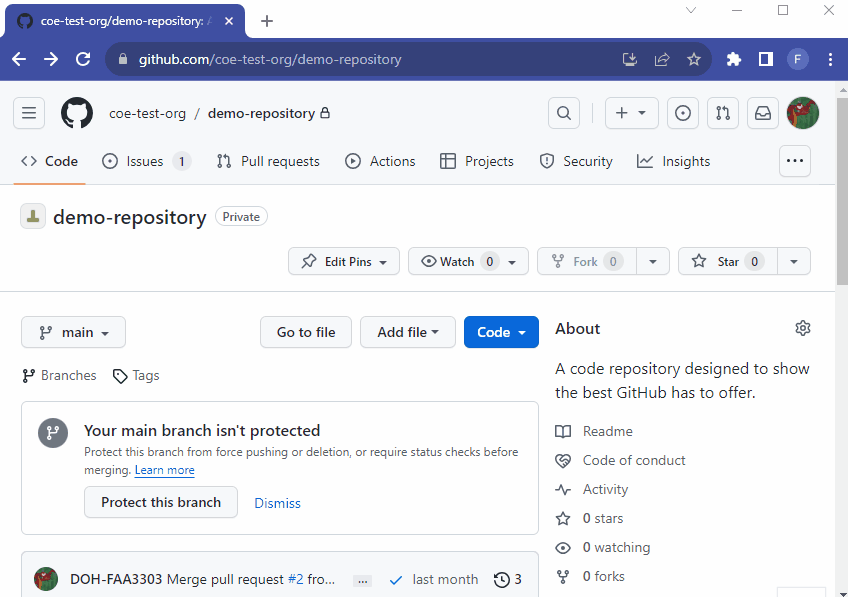

PowerShell
$ tree /f
C:.
│ .gitignore
│ CODE_OF_CONDUCT.md
│ CONTRIBUTING.md
│ LICENSE
│ README.md
│
├───.github
└───profile
README.mdObjectives
In the Github Organization we may require all repositories to contain certain documents. For example, we want to make sure that every repo has a CODE OF CONDUCT document that is a general policy applied throughout the organization.
Here’s a list of required documents:
READMEREADME files are instructions or documentation on how to use your software. It should give a quick introduction to the repo and instructions on how to install or run the code.
CODE_OF_CONDUCTA Code of Conduct can let a user know what the rules of the organization are and how any wrongful behavior will be addressed. The document will provide the “standards for how to engage in a community”
CONTRIBUTING.mdThis file should appear in the issue tab in a repo. It lets a user know how they can contribute to the project and if they need to sign any forms before contributing. Some larger organizations require that a person knows what they are contributing to and they must sign a form acknowledging that any software/code contributions to the project will be used and cannot be retracted by the user. The code submitted may also be used to develop processes but the organization will not pay the individual contributor (since this is open-source, we only look for open-source contributions)
LICENSEThese should be and are set at the repo level. There will be many different licenses to choose from that will depend on the specific repo. More on that here.
Policy rules may include requiring certain documents in each repo or requiring that a person sign every commit.
.github ReposYou can set most policy rules and create documents for each repo at the organization level by using a special .github repo. Dot files and dot folders have special functionality in some software. For Github, the .github folder defines workflows for things like Github Actions in a repo. A .github repository on the other hand defines organization level rules and templates.

In order to write and set these policies at the organization level we can put them at the root of the .github repository and edit them there.
PowerShell
$ tree /f
C:.
│ .gitignore
│ CODE_OF_CONDUCT.md
│ CONTRIBUTING.md
│ LICENSE
│ README.md
│
├───.github
└───profile
README.mdTake a look above. I have the required documents/policies at the root of the .github repo directory. Now if I open up any given repo in the organization I will find a link to those files:

If you click on the CODE_OF_CONDUCT link it will take you right to the .github repo and open the CODE_OF_CONDUCT.md file there:

Now you can set organization level policies from the .github repo and they will automatically populate in all existing and new repositories unless there are repo specific policies in place. If a repo already has its own policies they will not be overwritten.
Aside from policy documents, you can make templates at the organization level. Two commonly used templates are issue templates and discussion templates.
In the public repos there may be end users that may have limited experience using Github. If they want to submit an issue or ask a question they get lost. Templates can help them form a question or idea. Templates can also help standardize how issues and discussions are maintained throughout the organization.
Structuring the format of issues and discussions can make the author and the end-user’s lives easier.
In the .github repo I made a folder called .github. This is a special folder that can hold Github Action workflows and more, as mentioned above.
In the .github folder I have a folder called DISCUSSION_TEMPLATE and another called ISSUE_TEMPLATE. These are special folders that Github recognizes as discussion and issue folders that will set templates at the repo (or in this case the org) level.
PowerShell
$ tree /f
C:.
│ .gitignore
│ CODE_OF_CONDUCT.md
│ CONTRIBUTING.md
│ LICENSE
│ README.md
│
├───.github
│ │ pull_request_template.md
│ │
│ ├───DISCUSSION_TEMPLATE
│ │ feature-requests.yml
│ │ q-a.yml
│ │ show-and-tell.yml
│ │
│ └───ISSUE_TEMPLATE
│ bug_report.yml
│ config.yml
│ feature_request.yml
│
└───profile
README.mdEach Folder has .yml files in it that are basically Github instructions on how to format issues and discussions.
For example, in the ISSUE_TEMPLATE folder I have a .yml file called bug_report.yml. This file contains the structure for how someone can report a bug.
bug-report.yml
name: Bug Report
description: File a bug report here
title: "[BUG]: "
labels: ["bug"]
assignees: ["DOH-FAA3303"]
body:
type: markdown
attributes:
value: |
Thanks for taking the time to fill out this bug report
Make sure there aren't any open/closed issues for this topic Now, when someone clicks on the Issues tab in a repo in this organization they will be met with the Bug Report template:

Notice that in the template you can create text areas and pre-fill those areas with suggestions. You can even require that someone fills out those areas before they can submit the issue:
bug-report.yml
- type: textarea
id: steps-to-reproduce
attributes:
label: Steps To Reproduce
description: Steps to reproduce the behavior.
placeholder: |
1. Go to '...'
2. Click on '...'
3. Scroll down to '...'
4. See error
validations:
required: trueWe may want to require authors or reviewers to sign-off on commits to a repo. This is sometimes established in projects to “ensure that copyrighted code not released under an appropriate free software (open source) license is not included in the kernel.”
You can install a Github App in the organization and it will be applied to all repos. The DCO App (Developer Certificate of Origin) is popular and lightweight. To install it in the organization, click on Configure and it will give you the option to configure it with the organization of choice.
Infrastructure as Code (IaC) can be helpful when managing administration tasks or writing hooks at the org level.